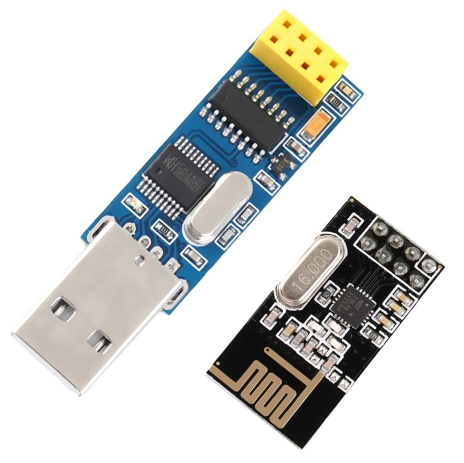
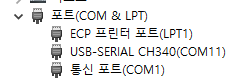

RF24 리모트 조작
nRF24L01 무선 제어 모듈듈을 이용하여 리모터에서 프로그램을 통한 테이블 제어을 한다.
컴퓨터에서 본 모듈을 연결하여 프로그램 작성을 통한 테이블 제어를 한다.

송신 명령어
- rot cw ~ : 시계 방향으로 연속 돌기
- rot ccw ~ : 반시계 방향으로 연속 돌기
- rot org : 원점으로 지정한 곳으로 복귀
- stop : 회전 중지
- set org : 회전의 원점 지정
- speed 500 : 회전속도 지정, 스피드 값은 "100 ~ 50000" 사이값을 지정할 수 있다.
초기값은 "500" 으로 설정되어 있다.
송신 프로그램 적용 (파이썬)
- 회전 명령 송신
from rf24_cont import rf24_dongle
rf = rf24_dongle()
rf.send('rot cw ~')
rf.close()
- 정지 명령 송신
from rf24_cont import rf24_dongle
rf = rf24_dongle()
rf.send('stop')
rf.close()
- 적용사례 : 45도 오른쪽 회전, 2초 멈춤을 반복하여 360도 회전
from rf24_cont import rf24_dongle
rf = rf24_dongle()
serial_port = 'COM8'
rf.init(serial_port)
angle = 0
while ( angle < 360 ) :
rf.send('rot cw 45')
time.sleep(2)
angle += 45
rf.close()
print('End of Rotation')
- 윈도우 OS 인 경우 RF 모듈 연결 시, 컴퓨터에 할당된 시리얼 번호을 확인하고,
프로그램에 해당 포트를 사용한다.
"윈도우 키 + X " 를 누르고, 왼쪽 팝업창이 뜨면, "M 키" 를 눌러서, 장치관리자를 실행한다.
장치관리자 내에서 포트(COM & LPT)를 확인하여, 해당 시리얼 포트 번호를 확인한다.

지원 프로그램 (rf24_cont.py)
- 프로그램을 다운로드 하여, 작성하는 파이썬 프로그램과 동일한 디렉토리에 둔다.
- import rf24_cont as rf 를 통하여, 해당 파일의 함수들을 사용한다.
- 다운로드 : rf24_cont.py